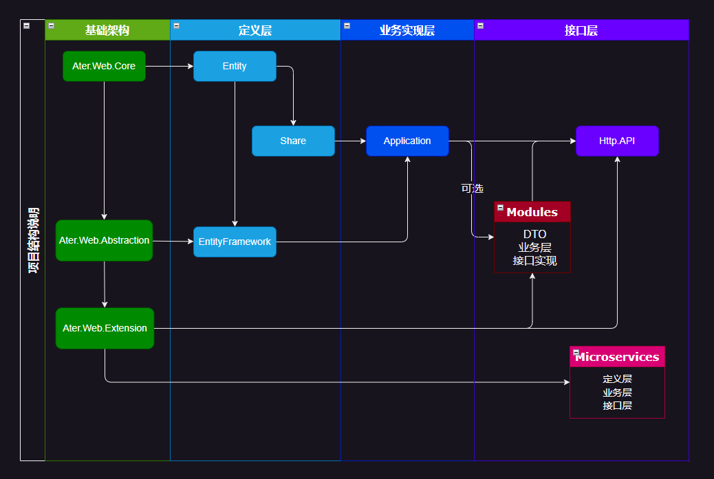

.NETAspire的开发环境集成dry cli时需要该文件。实体模型 定义所在项目，包括基础库的扩展，辅助类等。DTO 定义所在项目，可在多个应用间共用的内容，如各类模型定义、通用配置、数据处理转换等，依赖 Entity。Entity Framework 定义项目，依赖Entity。Manager 业务实现所在项目，包括各类服务。依赖 Share,EntityFramework。WebAPI 接口项目，定义和实现控制器逻辑，对外开放和运行的主程序，依赖Application。
Angular框架，可自行替换。Application项目，以复用相关逻辑代码。其结构图如下:

Note
这里不存在基于模块的开发，也没有这个概念。这里的模块是基于业务上的划分，将相应的业务实现在代码上进行拆分，实现关注点分离。
模块拥有自己的业务实现逻辑和API接口定义。它引用Application项目，以实现业务逻辑复用，并被Http.API主项目引用，统一公开接口访问。
模块的实体模型仍然在 Entity 项目中进行定义和管理
Entity 只用来存放实体模型类，并且所有实体模型都应该放到该项目中。
Http.API 处理跟Web接口交互相关的内容，包括接口定义，请求、响应的验证和处理，权限认证等。所有数据为操作或业务逻辑，不应该放到该项目。
Application 项目主要用来实现业务逻辑，包括集成或调用的第三方接口或服务。